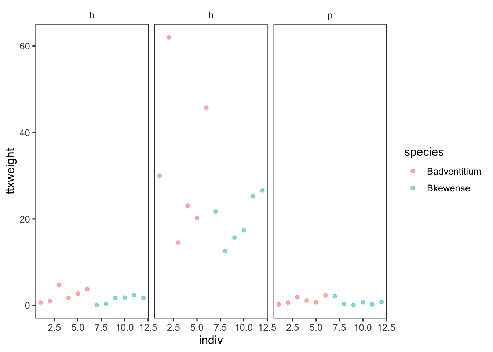
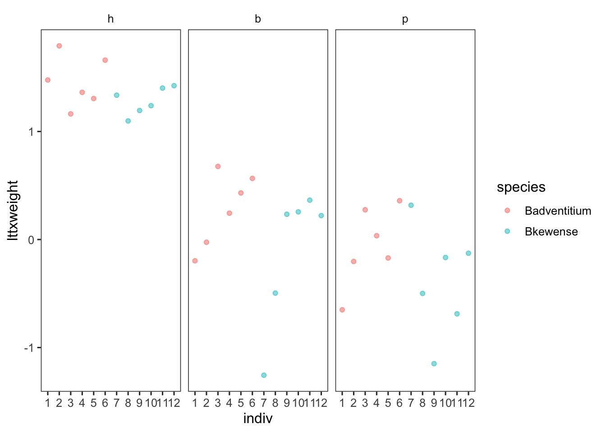

_01.jpeg){kind=link}
{kind=link}
library(tidyverse)
source("R/set_ggplot_theme.R")
library(broom)
library(Rmisc)
library(car)
library(lme4)
library(lmerTest)
library(nlme)
library(VCA)
library(afex)
library(ez)
library(apaTables)QK Box 11.1
Stokes et al. (2014) studied the neurotoxin tetrodotoxin (TTX) in flatworms. The between-plots factor was flatworm species (fixed with two groups: Bipalium adventitium and Bipalium kewense) with individual flatworms (plots) nested within species. The within-plots factor was body segment (fixed with three groups: head, anterior body, posterior body) and each segment represented a “sub-plot”. The response variable was the TTX concentration of tissue adjusted for weight. The main research questions were about the fixed effects of species, body segment and their interaction on TTX concentration, but the analyses also provide information about the variances associated with the random effects of individual within species and the random interaction between individuals within species and body segment.
Bipalium advenitium. Yale Peabody Museum,  , via Wikimedia Commons
, via Wikimedia Commons
Bipalium kewense. Don Loarie  , via Wikimedia Commons
, via Wikimedia Commons
The data are here
Stokes, A. N., Ducey, P. K., Neuman-Lee, L., Hanifin, C. T., French, S. S., Pfrender, M. E., Brodie, E. D., 3rd & Brodie, E. D., Jr. (2014). Confirmation and distribution of tetrodotoxin for the first time in terrestrial invertebrates: two terrestrial flatworm species (Bipalium adventitium and Bipalium kewense). PLoS One, 9, e100718.
Preliminaries
Packages:
Import stokes data file (stokes.csv)
stokes <- read.csv("data/stokes.csv")Visualize data
stokes %>%
ggplot(aes(indiv, ttxweight, color = species)) +
geom_point(alpha = 0.5) +
facet_wrap(~ segment)
Set contrasts from afex make individual a factor, make sure species a factor too put segments into sensible order
set_sum_contrasts()
stokes$indiv <- factor(stokes$indiv)
stokes$species<-factor(stokes$species)
stokes$segment <- factor(stokes$segment, levels=c("h","b","p"))Check residuals by leaving out error term
stokes1.aov <- aov(ttxweight~species*segment, stokes)
plot(stokes1.aov)Wedge-shaped with mean-variance relationship - redo after log transform
stokes$lttxweight <- log10(stokes$ttxweight)
stokes2.aov <- aov(lttxweight~species*segment, stokes)
plot(stokes2.aov)Visualize log data
stokes %>%
ggplot(aes(indiv, lttxweight, color = species)) +
geom_point(alpha = 0.5) +
facet_wrap(~ segment)
Fit full model with log(ttxweight)
stokes3.aov <- aov(lttxweight~species*segment+Error(indiv), stokes)
summary(stokes3.aov)
Error: indiv
Df Sum Sq Mean Sq F value Pr(>F)
species 1 0.8087 0.8087 6.17 0.0323 *
Residuals 10 1.3107 0.1311
---
Signif. codes: 0 '***' 0.001 '**' 0.01 '*' 0.05 '.' 0.1 ' ' 1
Error: Within
Df Sum Sq Mean Sq F value Pr(>F)
segment 2 17.149 8.575 46.965 2.78e-08 ***
species:segment 2 0.074 0.037 0.202 0.819
Residuals 20 3.652 0.183
---
Signif. codes: 0 '***' 0.001 '**' 0.01 '*' 0.05 '.' 0.1 ' ' 1Use ez for comparison with type 3 SS - same result as design is balanced
ezstokes <- ezANOVA(data=stokes, dv=lttxweight, wid=indiv, within=segment, between=species, type=3)
print(ezstokes)$ANOVA
Effect DFn DFd F p p<.05 ges
2 species 1 10 6.1699328 3.232426e-02 * 0.14012958
3 segment 2 20 46.9649253 2.779231e-08 * 0.77558408
4 species:segment 2 20 0.2021994 8.185815e-01 0.01466111
$`Mauchly's Test for Sphericity`
Effect W p p<.05
3 segment 0.719343 0.2270974
4 species:segment 0.719343 0.2270974
$`Sphericity Corrections`
Effect GGe p[GG] p[GG]<.05 HFe p[HF]
3 segment 0.7808492 6.940839e-07 * 0.8993921 1.214771e-07
4 species:segment 0.7808492 7.654586e-01 0.8993921 7.963230e-01
p[HF]<.05
3 *
4 Get var components using OLS
Note that these estimates treat B(A)*C as the residual for B(A) vc
stokes2 <- as.data.frame(stokes)
stokes.vca <- anovaMM(lttxweight~species/(indiv)+segment+species*segment, NegVC=TRUE, stokes2)
stokes.vca
ANOVA-Type Estimation of Mixed Model:
--------------------------------------
[Fixed Effects]
int speciesBadventitium
-0.385414 0.326190
speciesBkewense segmentb
0.000000 0.272682
segmenth segmentp
1.667431 0.000000
speciesBadventitium:segmentb speciesBkewense:segmentb
0.068888 0.000000
speciesBadventitium:segmenth speciesBkewense:segmenth
-0.148197 0.000000
speciesBadventitium:segmentp speciesBkewense:segmentp
0.000000 0.000000
[Variance Components]
Name DF SS MS VC %Total SD
1 total 29.367096 0.165407 100 0.406702
2 species:indiv 10 1.310664 0.131066 -0.01717 -10.380622 0
3 error 20 3.651543 0.182577 0.182577 110.380622 0.42729
CV[%]
1 98.914014
2 0
3 103.921222
Mean: 0.411168 (N = 36)
Experimental Design: balanced | Method: ANOVAVCAinference(stokes.vca, alpha=0.05, ci.method="satterthwaite")
Inference from Mixed Model Fit
------------------------------
> VCA Result:
-------------
[Fixed Effects]
int speciesBadventitium
-0.3854 0.3262
speciesBkewense segmentb
0.0000 0.2727
segmenth segmentp
1.6674 0.0000
speciesBadventitium:segmentb speciesBkewense:segmentb
0.0689 0.0000
speciesBadventitium:segmenth speciesBkewense:segmenth
-0.1482 0.0000
speciesBadventitium:segmentp speciesBkewense:segmentp
0.0000 0.0000
[Variance Components]
Name DF SS MS VC %Total SD CV[%]
1 total 29.3671 0.1654 100 0.4067 98.914
2 species:indiv 10 1.3107 0.1311 -0.0172 -10.3806 0 0
3 error 20 3.6515 0.1826 0.1826 110.3806 0.4273 103.9212
Mean: 0.4112 (N = 36)
Experimental Design: balanced | Method: ANOVA
> VC:
-----
Estimate DF CI LCL CI UCL One-Sided LCL One-Sided UCL
total 0.1654 29.3671 0.1052 0.2976 0.1130 0.2699
species:indiv -0.0172 0.7840
error 0.1826 20.0000 0.1069 0.3807 0.1163 0.3365
> SD:
-----
Estimate DF CI LCL CI UCL One-Sided LCL One-Sided UCL
total 0.4067 29.3671 0.3243 0.5456 0.3361 0.5195
species:indiv 0.0000 0.7840
error 0.4273 20.0000 0.3269 0.6170 0.3410 0.5801
> CV[%]:
--------
Estimate DF CI LCL CI UCL One-Sided LCL One-Sided UCL
total 98.9140 29.3671 78.8754 132.6887 81.7401 126.3578
species:indiv 0.0000 0.7840
error 103.9212 20.0000 79.5059 150.0695 82.9244 141.0874
95% Confidence Level | CIs for negative VCs excluded
Satterthwaite methodology used for computing CIs Fit mixed effects models with lmer
stokes.lmer <- lmer(lttxweight~species+segment+species*segment+(1|indiv), REML=TRUE, stokes)Check residuals from lmer plot
plot(stokes.lmer)summary(stokes.lmer, ddf="Kenward-Roger")Linear mixed model fit by REML. t-tests use Kenward-Roger's method [
lmerModLmerTest]
Formula: lttxweight ~ species + segment + species * segment + (1 | indiv)
Data: stokes
REML criterion at convergence: 41.9
Scaled residuals:
Min 1Q Median 3Q Max
-2.81144 -0.39960 0.08694 0.72676 1.72771
Random effects:
Groups Name Variance Std.Dev.
indiv (Intercept) 0.0000 0.0000
Residual 0.1654 0.4067
Number of obs: 36, groups: indiv, 12
Fixed effects:
Estimate Std. Error df t value Pr(>|t|)
(Intercept) 1.4600 0.1660 30.0000 8.793 8.36e-10 ***
speciesBkewense -0.1780 0.2348 30.0000 -0.758 0.454
segmentb -1.1777 0.2348 20.0000 -5.015 6.63e-05 ***
segmentp -1.5192 0.2348 20.0000 -6.470 2.62e-06 ***
speciesBkewense:segmentb -0.2171 0.3321 20.0000 -0.654 0.521
speciesBkewense:segmentp -0.1482 0.3321 20.0000 -0.446 0.660
---
Signif. codes: 0 '***' 0.001 '**' 0.01 '*' 0.05 '.' 0.1 ' ' 1
Correlation of Fixed Effects:
(Intr) spcsBk sgmntb sgmntp spcsBkwns:sgmntb
specisBkwns -0.707
segmentb -0.707 0.500
segmentp -0.707 0.500 0.500
spcsBkwns:sgmntb 0.500 -0.707 -0.707 -0.354
spcsBkwns:sgmntp 0.500 -0.707 -0.354 -0.707 0.500
optimizer (nloptwrap) convergence code: 0 (OK)
boundary (singular) fit: see help('isSingular')anova(stokes.lmer, ddf="Kenward-Roger")Type III Analysis of Variance Table with Kenward-Roger's method
Sum Sq Mean Sq NumDF DenDF F value Pr(>F)
species 0.8087 0.8087 1 10 4.8890 0.05146 .
segment 17.1494 8.5747 2 20 51.8402 1.223e-08 ***
species:segment 0.0738 0.0369 2 20 0.2232 0.80193
---
Signif. codes: 0 '***' 0.001 '**' 0.01 '*' 0.05 '.' 0.1 ' ' 1Contrast head vs anterior and anterior vs posterior segments
library(emmeans)
stokes.emm <- emmeans(stokes.lmer, ~segment)
stokes.con <- contrast(stokes.emm, "consec")
summary(stokes.con, adjust="none") contrast estimate SE df t.ratio p.value
b - h -1.286 0.166 20 -7.747 <.0001
p - b -0.307 0.166 20 -1.850 0.0792
Results are averaged over the levels of: species
Degrees-of-freedom method: kenward-roger Get variance components with CIs
stokes.ci <- confint.merMod(stokes.lmer)
stokes.vc <- (stokes.ci)^2
print(stokes.vc) 2.5 % 97.5 %
.sig01 0.00000000 0.04989851
.sigma 0.08975775 0.22735990
(Intercept) 1.33364907 3.11587298
speciesBkewense 0.37157920 0.06430639
segmentb 2.58966474 0.55664060
segmentp 3.80567534 1.18299122
speciesBkewense:segmentb 0.68464304 0.15465423
speciesBkewense:segmentp 0.57538799 0.21358195